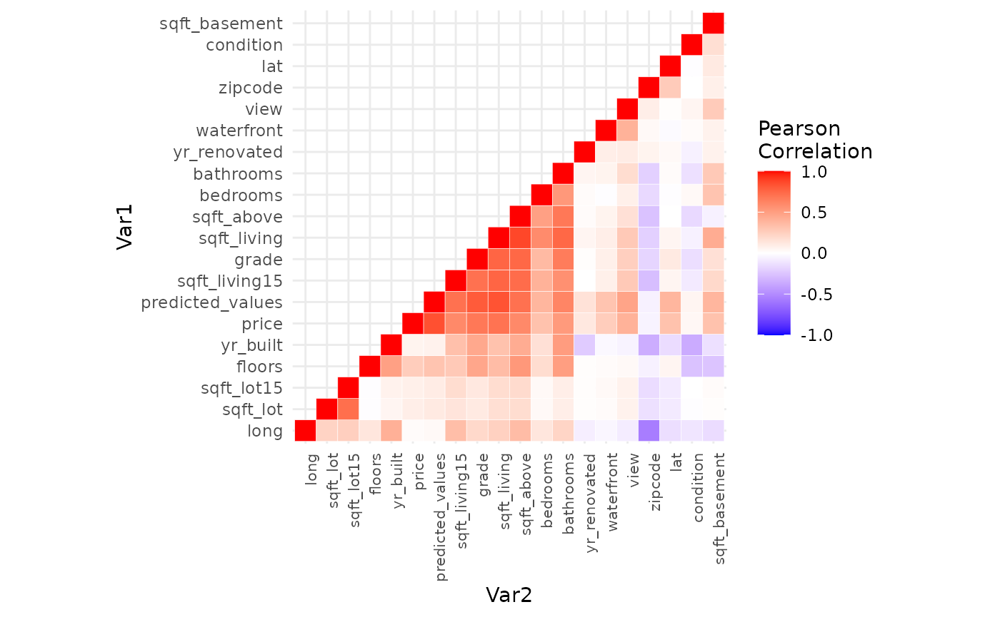
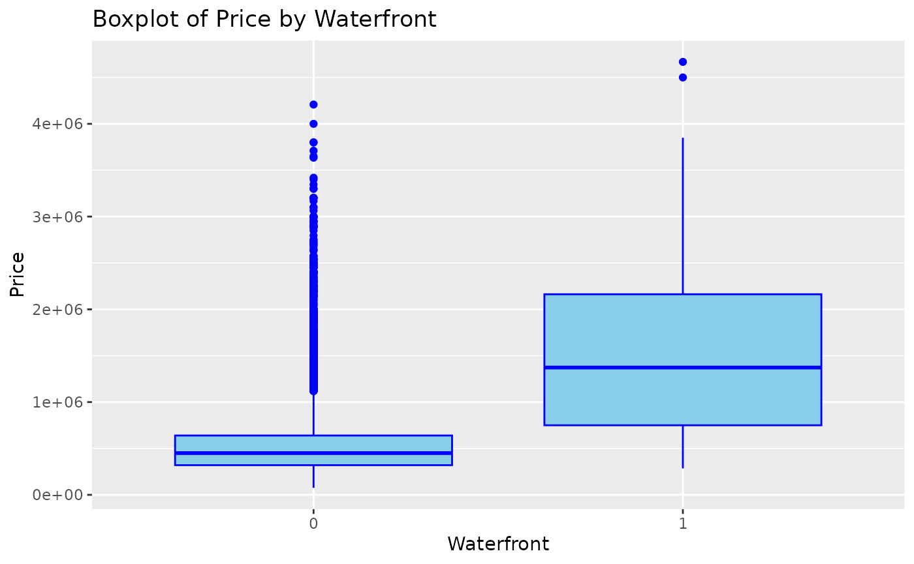
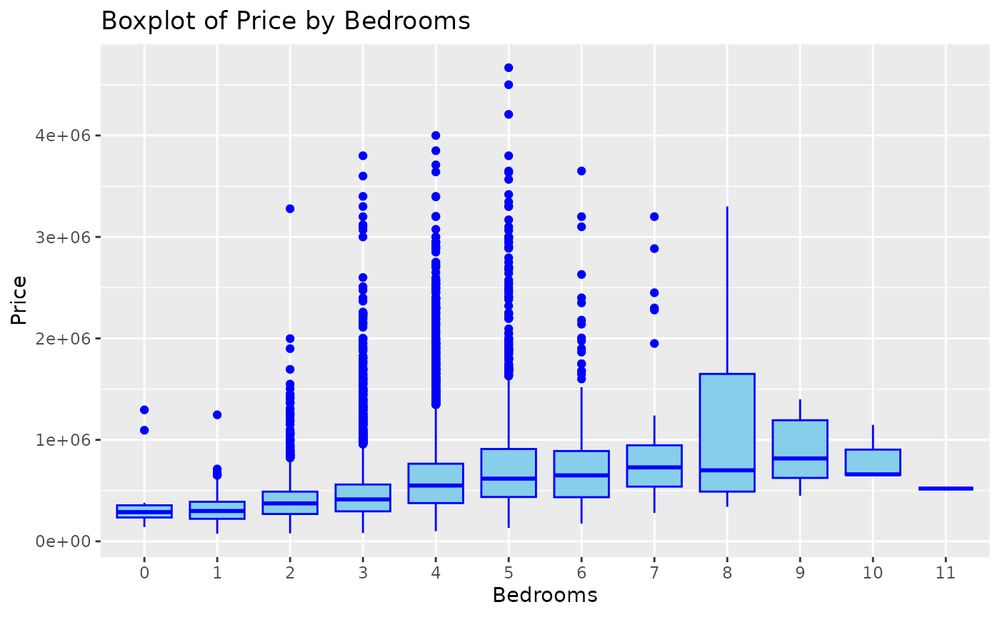
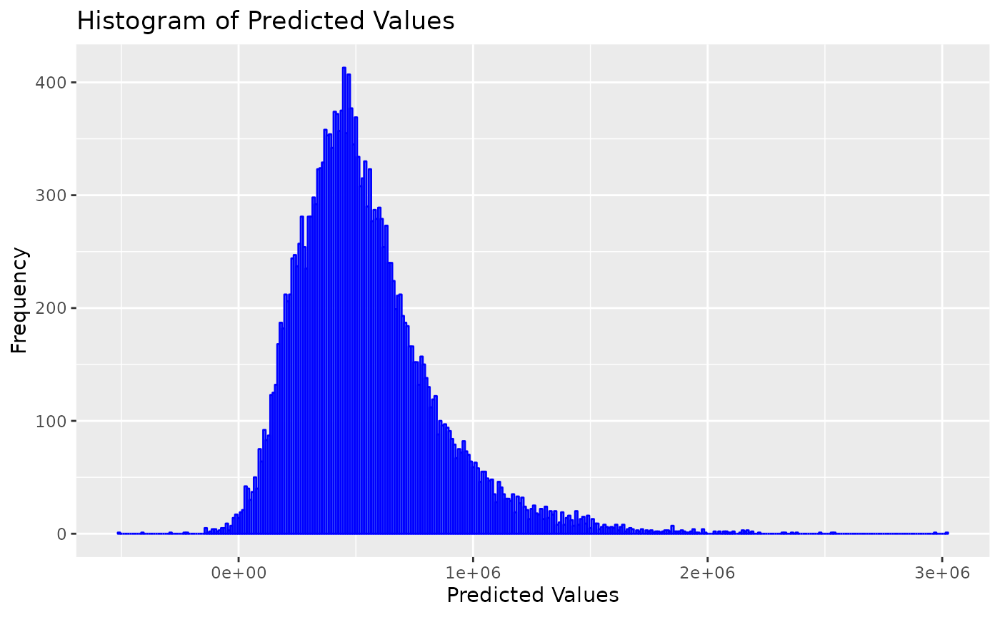
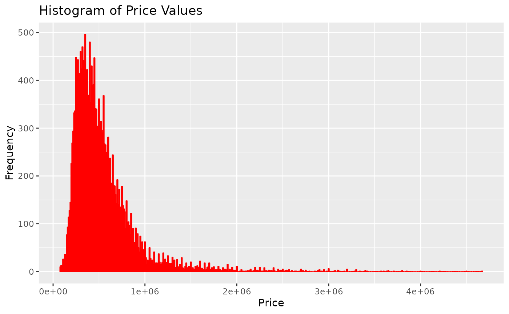
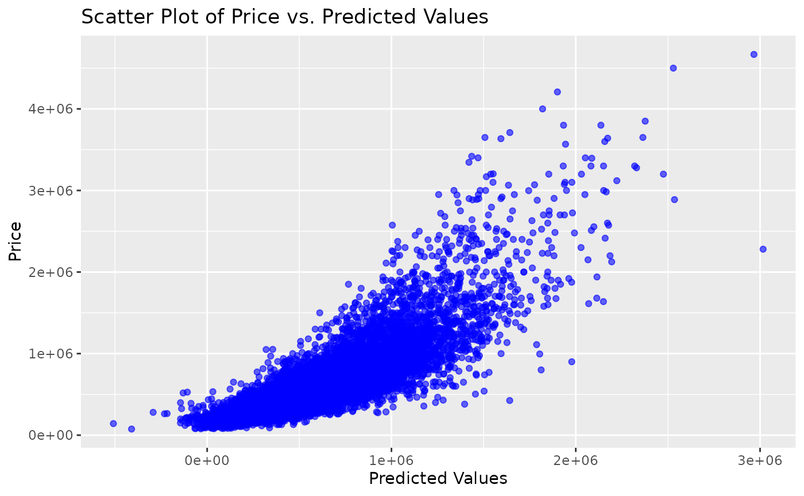
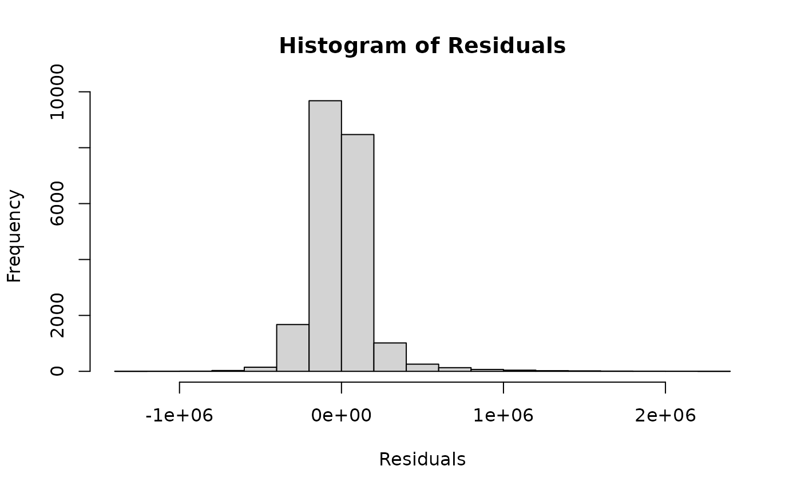

The GEO712PACKAGE is a test R package created for the GEO712 course at McMaster University (fall term of 2023). In this R package we share the processed data of a multiple regression model. We use a data set from Kaggle, named “House Sales in King County, USA”, to predict house price using a regression model. The data set contains house sales prices for King County, which includes Seattle. The original data set includes homes sold between May 2014 and May 2015, with 21,613 registers and 21 variables regarding the houses sold.
You can install the development version of GEO712PACKAGE from GitHub with:
# install.packages("devtools")
# library("devtools")
# devtools::install_github("dias-bruno/GEO712PACKAGE")This is a basic example which shows you how to access the data files. First, we’ll need call the library “GEO712PACKAGE:
Accessing the data:
data(kc_house_data_processed)Visualizing the summary of the data:
summary(kc_house_data_processed)
#> price bedrooms bathrooms sqft_living
#> Min. : 75000 Min. : 0.000 Min. :0.000 Min. : 290
#> 1st Qu.: 321838 1st Qu.: 3.000 1st Qu.:1.750 1st Qu.: 1426
#> Median : 450000 Median : 3.000 Median :2.250 Median : 1910
#> Mean : 538176 Mean : 3.369 Mean :2.114 Mean : 2078
#> 3rd Qu.: 645000 3rd Qu.: 4.000 3rd Qu.:2.500 3rd Qu.: 2550
#> Max. :4668000 Max. :11.000 Max. :8.000 Max. :13540
#> sqft_lot floors waterfront view
#> Min. : 520 Min. :1.000 Min. :0.000000 Min. :0.0000
#> 1st Qu.: 5040 1st Qu.:1.000 1st Qu.:0.000000 1st Qu.:0.0000
#> Median : 7616 Median :1.500 Median :0.000000 Median :0.0000
#> Mean : 15109 Mean :1.494 Mean :0.007414 Mean :0.2335
#> 3rd Qu.: 10684 3rd Qu.:2.000 3rd Qu.:0.000000 3rd Qu.:0.0000
#> Max. :1651359 Max. :3.500 Max. :1.000000 Max. :4.0000
#> condition grade sqft_above sqft_basement
#> Min. :1.000 Min. : 1.000 Min. : 290 Min. : 0.0
#> 1st Qu.:3.000 1st Qu.: 7.000 1st Qu.:1190 1st Qu.: 0.0
#> Median :3.000 Median : 7.000 Median :1560 Median : 0.0
#> Mean :3.409 Mean : 7.655 Mean :1787 Mean : 290.9
#> 3rd Qu.:4.000 3rd Qu.: 8.000 3rd Qu.:2210 3rd Qu.: 560.0
#> Max. :5.000 Max. :13.000 Max. :9410 Max. :4820.0
#> yr_built yr_renovated zipcode lat
#> Min. :1900 Min. : 0.00 Min. :98001 Min. :47.16
#> 1st Qu.:1951 1st Qu.: 0.00 1st Qu.:98033 1st Qu.:47.47
#> Median :1975 Median : 0.00 Median :98065 Median :47.57
#> Mean :1971 Mean : 84.35 Mean :98078 Mean :47.56
#> 3rd Qu.:1997 3rd Qu.: 0.00 3rd Qu.:98118 3rd Qu.:47.68
#> Max. :2015 Max. :2015.00 Max. :98199 Max. :47.78
#> long sqft_living15 sqft_lot15 predicted_values
#> Min. :-122.5 Min. : 399 Min. : 651 Min. :-508596
#> 1st Qu.:-122.3 1st Qu.:1490 1st Qu.: 5100 1st Qu.: 340290
#> Median :-122.2 Median :1840 Median : 7620 Median : 489068
#> Mean :-122.2 Mean :1986 Mean : 12770 Mean : 538176
#> 3rd Qu.:-122.1 3rd Qu.:2360 3rd Qu.: 10080 3rd Qu.: 678469
#> Max. :-121.3 Max. :6210 Max. :871200 Max. :3016522First, let’s visualize the correlation matrix. We’ll use the ggplot2 library, an R package for data visualization. Calculate the correlation matrix:
cormat <- round(cor(kc_house_data_processed),2)
melted_cormat <- melt(cormat)
head(melted_cormat)
#> Var1 Var2 value
#> 1 price price 1.00
#> 2 bedrooms price 0.32
#> 3 bathrooms price 0.52
#> 4 sqft_living price 0.70
#> 5 sqft_lot price 0.09
#> 6 floors price 0.26Creating a correlation heatmap:
# Function to get lower or upper triangle of the correlation matrix
get_triangle <- function(cormat, upper = TRUE){
if (upper) cormat[lower.tri(cormat)] <- NA
else cormat[upper.tri(cormat)] <- NA
return(cormat)
}
# Function to reorder the correlation matrix
reorder_cormat <- function(cormat){
dd <- as.dist((1 - cormat) / 2)
hc <- hclust(dd)
return(cormat[hc$order, hc$order])
}
# Reorder and get upper triangle of the correlation matrix
cormat <- reorder_cormat(cormat)
upper_tri <- get_triangle(cormat, upper = TRUE)
# Melt the correlation matrix
melted_cormat <- melt(upper_tri, na.rm = TRUE)
# Create a ggheatmap
ggheatmap <- ggplot(melted_cormat, aes(Var2, Var1, fill = value)) +
geom_tile(color = "white") +
scale_fill_gradient2(low = "blue", high = "red", mid = "white",
midpoint = 0, limit = c(-1,1), space = "Lab",
name = "Pearson\nCorrelation") +
theme_minimal() +
theme(axis.text.x = element_text(angle = 90, vjust = 1, size = 8, hjust = 1)) +
coord_fixed()
# Print the heatmap
print(ggheatmap)
We can see the ten variables with the highest positive correlation:
melted_cormat <- melted_cormat[order(-melted_cormat$value), ]
melted_cormat[melted_cormat$value != 1,][1:10,]
#> Var1 Var2 value
#> 210 sqft_living sqft_above 0.87
#> 126 price predicted_values 0.84
#> 187 predicted_values sqft_living 0.83
#> 167 predicted_values grade 0.80
#> 188 sqft_living15 sqft_living 0.76
#> 189 grade sqft_living 0.76
#> 209 grade sqft_above 0.75
#> 250 sqft_living bathrooms 0.75
#> 208 sqft_living15 sqft_above 0.73
#> 42 sqft_lot sqft_lot15 0.72The variables “sqft_living” and “sqft_above” show the highest positive correlation. The variable “sqft_living” refers to the area of the living room in square meters, while the variable “sqft_above” refers to the area of the plot in square meters. We can also see that there is a high positive linear correlation between the “price” and the “predicted_value” of the houses. This is a good result because the “predicted_value” is the result of a linear regression used as a model to predict house values.
We can also see the ten variables with the highest negative correlation:
melted_cormat <- melted_cormat[order(melted_cormat$value), ]
melted_cormat[melted_cormat$value != 1,][1:10,]
#> Var1 Var2 value
#> 321 long zipcode -0.56
#> 365 yr_built condition -0.36
#> 325 yr_built zipcode -0.35
#> 328 sqft_living15 zipcode -0.28
#> 331 sqft_above zipcode -0.26
#> 364 floors condition -0.26
#> 384 floors sqft_basement -0.25
#> 265 yr_built yr_renovated -0.22
#> 330 sqft_living zipcode -0.20
#> 333 bathrooms zipcode -0.20In general, the variables show more positive correlation than negative correlation. In general, the correlations are coherent, with similar variables having a high positive correlation and contrasting variables showing a negative correlation.
Let’s look at the pair graphs for the first five variables:
pairs(kc_house_data_processed[,1:5])We can create a boxplot to analyze how the price varies depending on some characteristics of the house. Using the “waterfront” feature (meaning whether the house is located by the sea), the code below creates a boxplot chat:
kc_house_data_processed$waterfront <- factor(kc_house_data_processed$waterfront)
ggplot(kc_house_data_processed, aes(x = waterfront, y = price)) +
geom_boxplot(fill = "skyblue", color = "blue") +
labs(title = "Boxplot of Price by Waterfront", x = "Waterfront", y = "Price") We can see that houses with a waterfront (=1) have higher values compared to houses without a waterfront (=0). The same analysis can be employed for the “bedrooms” variable, in which house values tend to be higher as the number of bedrooms increases, until it becomes constant (9 < n < 10) and then the house price starts to decrease:
kc_house_data_processed$bedrooms <- factor(kc_house_data_processed$bedrooms)
ggplot(kc_house_data_processed, aes(x = bedrooms, y = price)) +
geom_boxplot(fill = "skyblue", color = "blue") +
labs(title = "Boxplot of Price by Bedrooms", x = "Bedrooms", y = "Price")
Now, let’s take a look at some graphs of property prices and the predicted values according to the regression model:
ggplot(kc_house_data_processed, aes(x = predicted_values)) +
geom_histogram(binwidth = 10000, fill = "skyblue", color = "blue", alpha = 0.7) +
labs(title = "Histogram of Predicted Values", x = "Predicted Values", y = "Frequency")
ggplot(kc_house_data_processed, aes(x = price)) +
geom_histogram(binwidth = 10000, fill = "lightcoral", color = "red", alpha = 0.7) +
labs(title = "Histogram of Price Values", x = "Price", y = "Frequency") Plot a scatter graph of house prices and predicted values:
ggplot(kc_house_data_processed, aes(x = predicted_values, y = price)) +
geom_point(color = "blue", alpha = 0.6) +
labs(title = "Scatter Plot of Price vs. Predicted Values", x = "Predicted Values", y = "Price")
It is possible to obtain the regression residuals, which are the difference between the predicted values and the actual values (real prices, in this case):
kc_house_data_processed$residuals <- kc_house_data_processed$price - kc_house_data_processed$predicted_values
# View the first few rows of the dataframe with residuals
head(kc_house_data_processed)
#> price bedrooms bathrooms sqft_living sqft_lot floors waterfront view
#> 1 221900 3 1.00 1180 5650 1 0 0
#> 2 538000 3 2.25 2570 7242 2 0 0
#> 3 180000 2 1.00 770 10000 1 0 0
#> 4 604000 4 3.00 1960 5000 1 0 0
#> 5 510000 3 2.00 1680 8080 1 0 0
#> 6 1225000 4 4.50 5420 101930 1 0 0
#> condition grade sqft_above sqft_basement yr_built yr_renovated zipcode
#> 1 3 7 1180 0 1955 0 98178
#> 2 3 7 2170 400 1951 1991 98125
#> 3 3 6 770 0 1933 0 98028
#> 4 5 7 1050 910 1965 0 98136
#> 5 3 8 1680 0 1987 0 98074
#> 6 3 11 3890 1530 2001 0 98053
#> lat long sqft_living15 sqft_lot15 predicted_values residuals
#> 1 47.5112 -122.257 1340 5650 216186.4 5713.553
#> 2 47.7210 -122.319 1690 7639 715102.2 -177102.187
#> 3 47.7379 -122.233 2720 8062 402052.2 -222052.186
#> 4 47.5208 -122.393 1360 5000 452637.5 151362.530
#> 5 47.6168 -122.045 1800 7503 444936.2 65063.816
#> 6 47.6561 -122.005 4760 101930 1431551.4 -206551.391The following code provides a visual representation of the residue distribution:
kc_house_data_processed$residuals <- kc_house_data_processed$price - kc_house_data_processed$predicted_values
hist(kc_house_data_processed$residuals, main = "Histogram of Residuals", xlab = "Residuals")